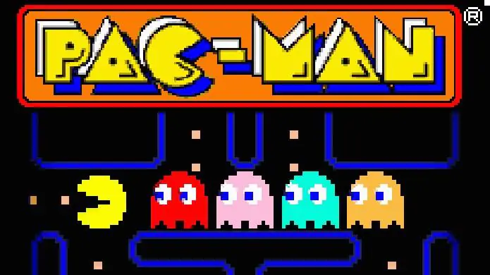

TOP 10 JOGOS RETRÔ
Tetris
Resident Evil 4
Street Fighter II
Pac-Man
Super Mario World
Team Fortress 2
Super Mario 64
Tibia
Final Fantasy VII
Ragnarok Online
Pac-Man

Pac-Man (conhecido em japonês com o nome de Puckman ou パックマン) é
um jogo eletrônico criado por Tōru Iwatani para a empresa Namco, e
sendo distribuído para o mercado americano pela Midway Games.
Produzido originalmente para Arcade no início dos anos 1980, tornou-se
um dos jogos mais jogados e populares no momento, tendo versões
modernas para diversos consoles e continuações para tantos outros,
inclusive na atualidade. A mecânica do jogo é simples: o jogador era
uma cabeça redonda com uma boca que se abre e fecha, posicionado em um
labirinto simples repleto de pastilhas e 4 fantasmas que o perseguiam.
O objetivo era comer todas as pastilhas sem ser alcançado pelos
fantasmas, em ritmo progressivo de dificuldade.
O jogo foi lançado no dia 22 de maio de 1980.
O jogo original rendeu muitas versões ainda para o Atari 2600 (como
"Mrs. Pacman", e "Super Pac-Man.", além de outros não relacionados mas
que seguiam o mesmo estilo), e posteriormente para diversos outros
consoles e para o computador. Atualmente existem versões em 3
dimensões, outras em estilo "adventure", sempre remontando ao
personagem redondo e faminto do jogo original e seus perseguidores
fantasmas.